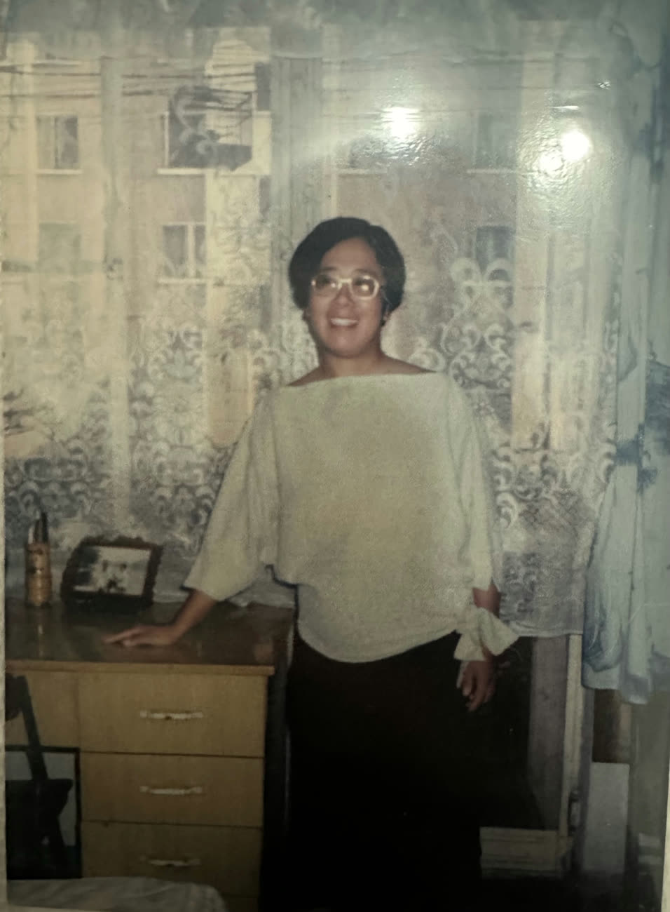
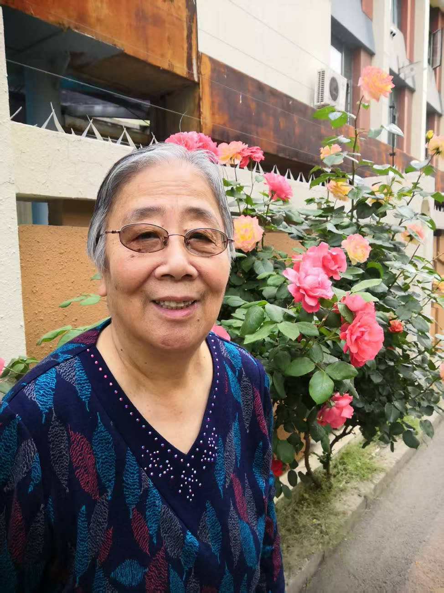
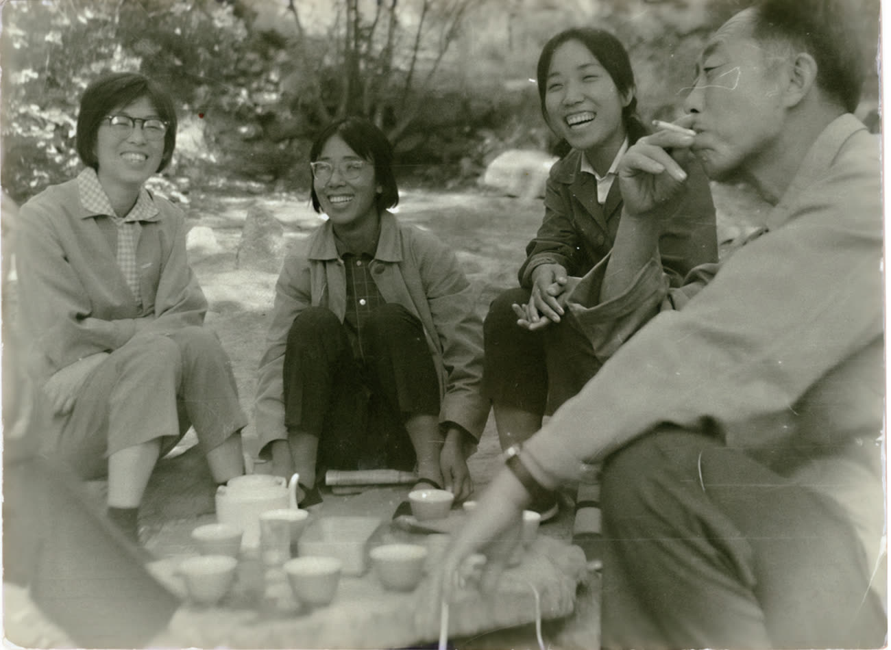
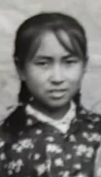
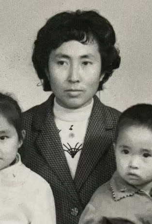
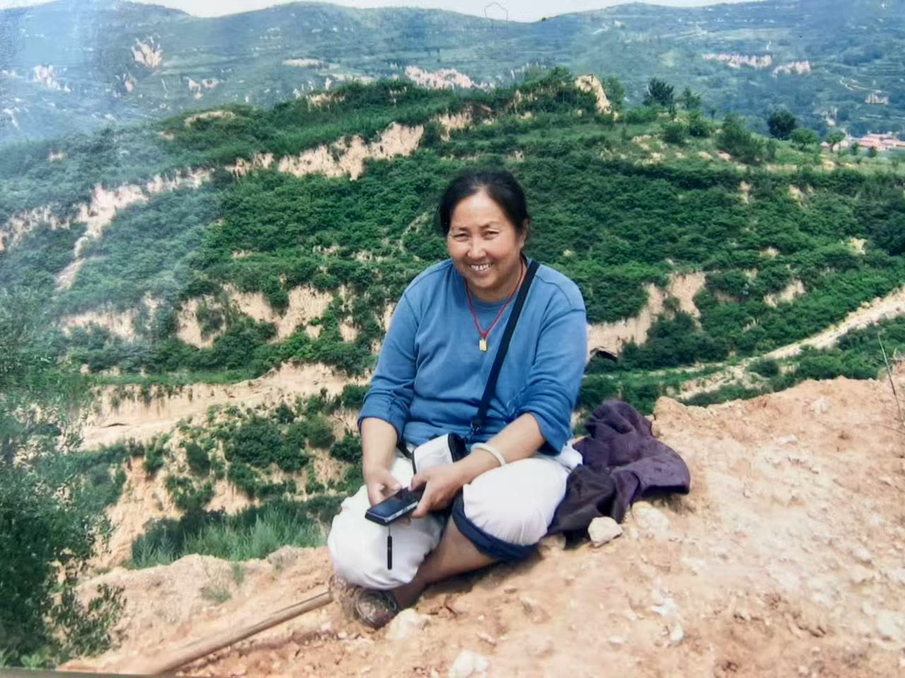
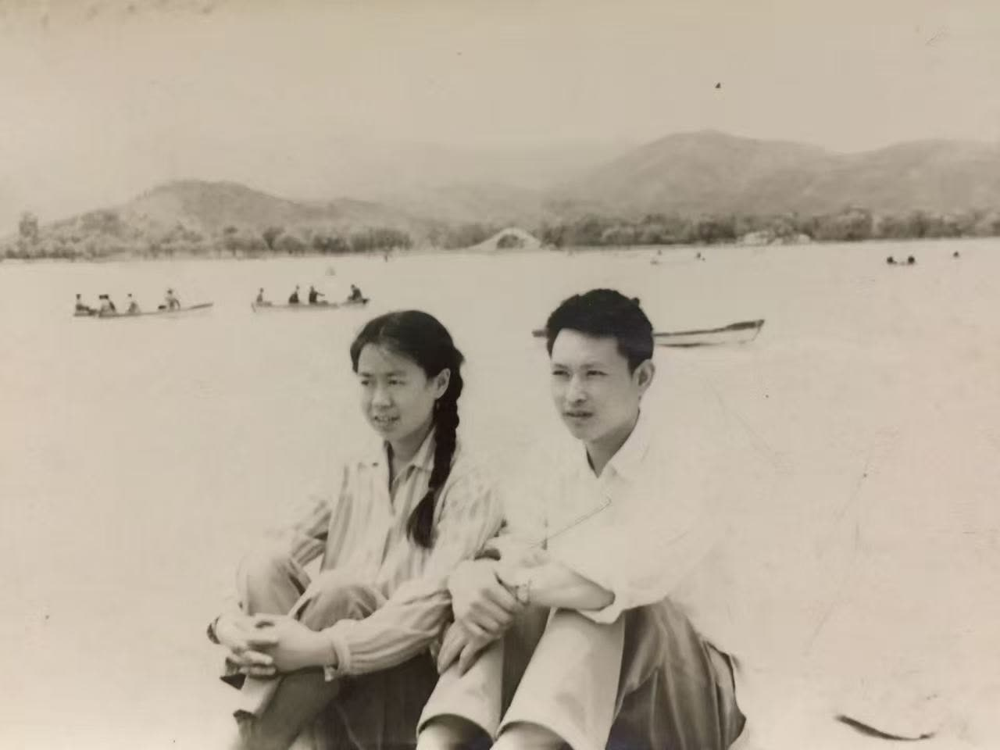
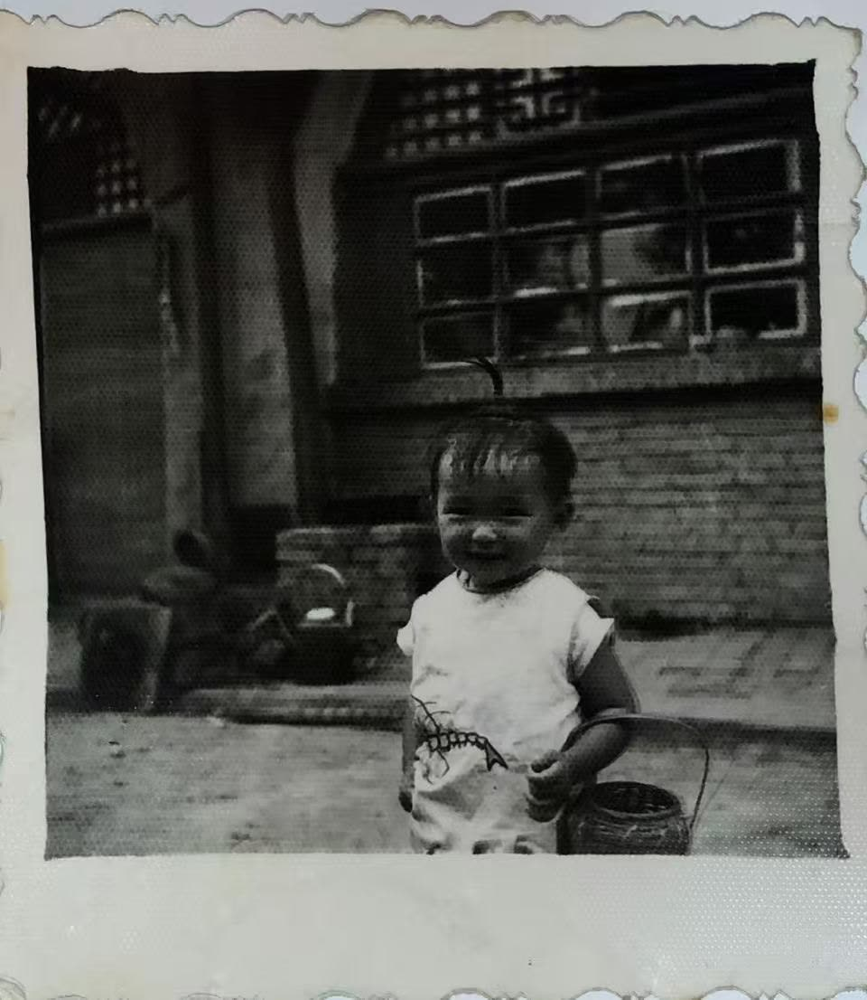
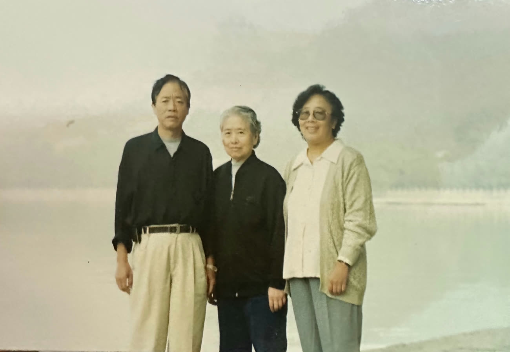
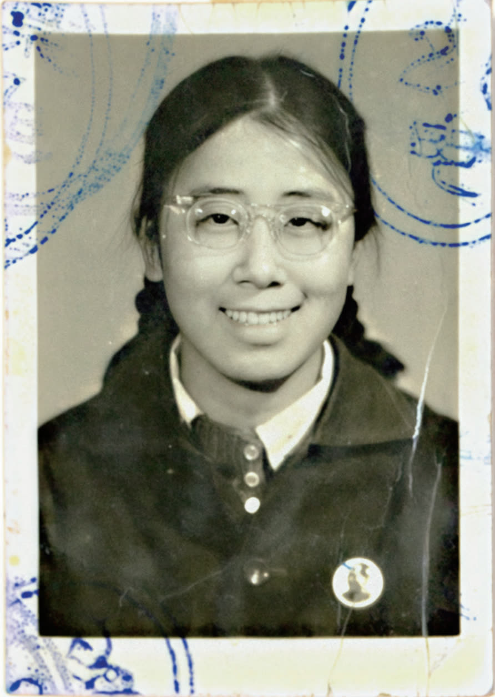

Listening is where everything begins. Before research, before action — I sit down with the people the world overlooks, and let their stories take the time they need.
Her Stories
A Family Narrative Collection
I interviewed my grandmother about her life, recording memories of war, famine, and family. The project later grew into a published story collection and the Her Voice Unheard website — reflecting my belief that every ordinary life deserves to be remembered and heard.










Hami Documentary
Women who carry the thread — 哈密刺绣
Through interviews with women artisans, I explored how traditional embroidery shapes identity, family, and cultural inheritance. Producing this documentary deepened my understanding of the stories and resilience behind intangible cultural heritage.
Housewives Research
Six interviews on family, identity & career
I conducted in-depth interviews with six housewives to better understand their experiences balancing family, identity, and career. Combining sociology and psychology, I examined how gender expectations influence women’s choices — and how they redefine their own sense of value.
“Between family and self, six women redrew the line — each in her own hand.”